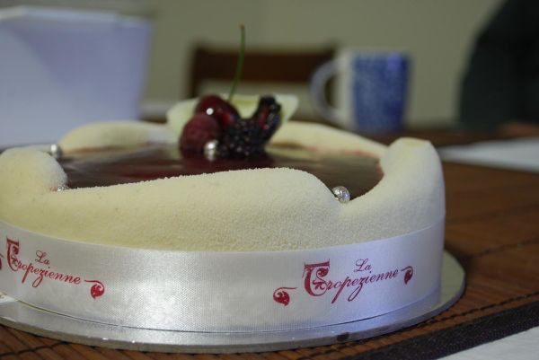

Perfectly Chocolate Cake

Photo: avlxyz (CC BY-SA 2.0)
A moist two-layer chocolate cake made with cocoa and thinned with boiling water, finished with a homemade cocoa-and-butter frosting.
Directions
- Heat oven to 350 degrees. Grease and flour two 9" round pans. Combine dry ingredients in large bowl. Add egg, milk, oil and vanilla. Beat for 2 minutes on medium speed. Stir in boiling water. (Batter will be thin) Pour into pans. Bake 30-35 minutes. Cool 10 minutes. Remove from pans to wire racks. Cool completely. Frost. 10-12 servings.
- FROSTING
- Melt butter. Stir in cocoa. Alternately add powdered sugar and milk, beating on medium speed to spreading consistency. Add more milk, if needed. Add vanilla.
- Heat the oven to 350 degrees. Grease and flour two 9-inch round pans.
- Combine the dry ingredients in a large bowl.
- Add the eggs, milk, oil, and vanilla. Beat for 2 minutes on medium speed.
- Stir in the boiling water (the batter will be thin).
- Pour into the pans. Bake 30-35 minutes.
- Cool 10 minutes, then remove from the pans to wire racks. Cool completely, then frost. Makes 10-12 servings.
- For the frosting: melt the butter, then stir in the cocoa.
- Alternately add the powdered sugar and milk, beating on medium speed to spreading consistency. Add more milk if needed.
- Add the vanilla.
Goes well with
https://baron-3dl.github.io/normans-kitchen/recipe/perfectly-chocolate-cake.html